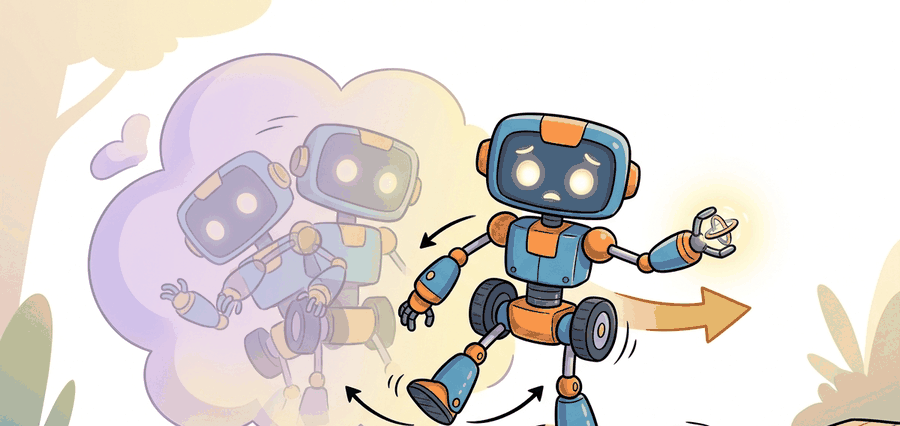

"Balance is what remains after every modeling shortcut gets punished by gravity."
A Dynamics Lecture After Midnight

This section assumes familiarity with the control fundamentals introduced in section 7.1, particularly feedback linearization and stability margins. The capture-point and ZMP reasoning developed here is taken further in section 45.3, where learned locomotion policies are evaluated against the same recoverability criteria. Both ideas converge in section 46.8, where whole-body humanoid controllers must satisfy balance constraints while coordinating arms and legs simultaneously.
A Boston Dynamics Atlas robot crosses rubble at a jog, absorbs a shove mid-stride, and keeps walking. That recovery does not come from a faster processor or a bigger dataset: it comes from a controller that knows, at every millisecond, whether the robot still has a reachable foothold before the next fall begins. Bipedal and quadrupedal robots are now leaving labs and entering warehouses, construction sites, and disaster zones, which means the margin between a clean step and a collapse has real consequences. In this section you will build the core tools: capture-point theory, zero-moment-point constraints, and gait-cycle analysis. Together they turn stability from an intuition into a quantity you can compute, monitor, and guarantee.
The linear inverted pendulum model gives a compact balance approximation. With center-of-mass horizontal position $c$ and height-fixed natural frequency $\omega = \sqrt{g/z_0}$, the capture point is $\xi = c + \dot c / \omega$. If $\xi$ leaves the reachable foothold set, the current stance cannot stop the fall without taking a step.
For zero-moment-point reasoning, the planned ZMP must stay inside the support polygon during contact. That is a necessary but not sufficient condition for robust walking because actuator bandwidth, contact compliance, perception delay, and state-estimation drift still matter in the closed loop.
The ZMP constraint matters in embodied AI because a real robot contacting uneven ground cannot rely on joint stiffness alone. When the ZMP exits the support polygon, the net ground reaction torque can no longer oppose the gravitational moment, so the robot tips regardless of what the joint motors command. On hardware this is irreversible within a single control cycle: once tipping begins, actuator bandwidth cannot recover the fall. Any learned or planned locomotion policy must therefore guarantee ZMP containment continuously, not just on average.
Mechanically, the ZMP is the point on the contact plane where the resultant ground reaction force produces zero net pitching or rolling moment. It is computed from the measured foot contact forces and their lever arms relative to the candidate point: sum the moments from all contact normals and tangential forces, then find the planar location that makes that sum zero. If no such point exists inside the convex hull of all active contact patches, the support polygon constraint is violated and a tip is imminent.
When logging balance diagnostics, set Drake's MultibodyPlant time step to match your control rate exactly (typically 1 ms for torque-controlled bipeds). A mismatch causes the ZMP computed inside Drake to lag the actual contact forces by one integration step, which silently inflates your apparent margin by 5-15 mm and masks near-failure episodes during offline replay. Set time_step=0.001 in AddMultibodyPlantSceneGraph and verify it equals your controller dt before trusting any margin number from simulation.
The right question is not whether the gait looks smooth on nominal terrain. It is whether the robot still has a feasible next foothold after a push, slip, or height error.
Theory
Static stability asks whether the projected center of mass lies inside the support region. Dynamic stability asks whether momentum, actuator authority, and future footholds allow recovery before the robot reaches an unrecoverable state. The gap between the two is not academic: in hardware trials with early Atlas controllers, a fixed static-stability check allowed recovery from pushes under 50 N, while a capture-point controller with replanning recovered from pushes over 150 N using the same actuators, the same sensors, and the same legs. The number that changed was the planning horizon, not the hardware.
Think of gait control like driving a manual car on a mountain road: cruising in gear is a smooth, continuous process, but the moment you need to downshift before a corner, you must time an abrupt discrete action (clutch in, gear change, clutch out) precisely or the continuous dynamics go wrong. Miss the shift and you either over-rev or stall. A legged robot faces the same structure: each foot on the ground is a continuous phase with its own smooth equations, but lifting or planting a foot is a discrete event that resets those equations entirely. A controller that treats the whole journey as one continuous motion will fail at exactly the moments the terrain demands a mode change.
Gait design is therefore a hybrid systems problem at heart. The robot alternates discrete contact modes and continuous within-contact dynamics. A controller that ignores mode transitions tends to fail precisely when the task becomes interesting: on slopes, during pushes, or while carrying loads. Boston Dynamics' Atlas and Spot platforms illustrate this concretely: Atlas uses a model-predictive controller that re-solves footstep placement at roughly 1 kHz, treating each contact mode switch as a hard constraint boundary; when shoved, it does not apply a fixed recovery rule but re-plans the capture point trajectory within the new support set. Spot's leg controller separates stance regulation (ZMP margin) from swing trajectory so that slipping on one foot triggers an independent replanning of just that leg without destabilizing the other three. These are published examples of the hybrid-systems decomposition operating in hardware, not simulation.
The right instrumentation is a balance ledger that records ZMP margin, capture-point error, stance phase, slip events, and recovery steps on every episode.
Under the Linear Inverted Pendulum (LIPM) assumption, where the center of mass height $z_{com}$ is held constant, the capture point is:
$$x_{cap} = x_{com} + \dot{x}_{com}\sqrt{\frac{z_{com}}{g}}$$
If $x_{cap}$ lies outside the reachable foothold set, the current stance cannot arrest the fall without taking a step. This equation is the minimal diagnostic for whether a stance phase is recoverable.
When balance is perturbed, a legged robot has three layers of recovery it can invoke, each requiring more motion than the last. The ankle strategy applies when the perturbation is small: the robot stiffens or drives its ankle joints to push the center of pressure toward the capture point without moving its feet. The hip strategy applies when ankle torque is insufficient: the robot rotates its trunk and swings its arms to shift angular momentum, buying time without taking a step. The stepping strategy is triggered when the capture point exits the reachable foothold set: the robot must place a new foot before the fall is irrecoverable. Controllers that skip straight to stepping for small pushes waste motion and slow locomotion; controllers that rely on ankle strategy for large pushes fall. The algorithm and disturbance logs below distinguish which layer fired on each episode.
- Estimate center of mass, center of pressure, stance phase, and body twist at control rate.
- Compute ZMP margin and capture-point error relative to the current or planned support region.
- If the capture point exits the current support set, trigger a step adjustment or stance widening policy.
- If step adjustment is infeasible, reduce commanded velocity and raise damping or compliance according to the safety mode.
- Log whether recovery came from ankle strategy, hip strategy, stepping, or operator intervention.
Worked Example
A tiny diagnostic on the capture point can explain why one gait survives a shove that another gait cannot recover from.
import math
com_x = 0.02
com_vx = 0.55
z0 = 0.82
g = 9.81
omega = math.sqrt(g / z0)
capture_point = com_x + com_vx / omega
support_max_x = 0.16
margin = round(support_max_x - capture_point, 3)
print(f"capture_point={capture_point:.3f} m")
print(f"remaining_margin={margin:.3f} m")Expected output interpretation. The capture point sits 1.9 cm outside the current support limit. A controller that keeps the same stance is already late. It must place a new foot, widen support, or lower momentum quickly enough to move the capture point back into a reachable set.
Use Drake for reduced-order reasoning, MuJoCo or Isaac Lab for contact-rich gait replay, and ROS 2 for synchronized force, IMU, and controller logs on hardware.
Practical Recipe
- Instrument ZMP, capture-point error, stance phase, and foot slip in every rollout.
- Evaluate nominal walking, pushes, friction drops, and height-map errors on the same disturbance panel.
- Separate gait generation from recovery logic so you can attribute failures to the right layer.
- Tune for recovery margin before tuning for style or top speed.
- Archive two traces for every new controller: a stable nominal run and a near-failure recovery run.
A gait can look smooth while silently using torque peaks, contact chatter, or emergency stance corrections that never appear in the summary video.
Students often assume that a legged robot is balanced whenever its projected center of mass falls inside the support polygon. This static stability criterion is a necessary condition for a standing robot at rest, but it completely ignores momentum: a robot can have its CoM well inside the support polygon yet be moving fast enough that the capture point has already left the reachable foothold set, making a fall unavoidable without a step. In embodied AI, controllers operate on moving systems subject to pushes, terrain variation, and actuator limits, so the relevant question is always whether the robot can reach a recoverable state in the future, not just whether the current pose looks geometrically stable. The correct mental model is dynamic recoverability: balance is about whether a feasible next foothold exists before the fall becomes irrecoverable, which the capture point quantifies and static CoM projection does not.
A warehouse biped that carries boxes should be tested with payload asymmetry and lateral nudges during turns. Many controllers that appear strong in straight-line walking fail when torso momentum and grasp maintenance interact.
If the robot can only stay upright when nobody bothers it, the gait is choreography, not control.
The current frontier couples a fast reduced-order planner (running at 1 kHz on an onboard CPU) with a learned residual policy that corrects the planner's footstep placement in real time. ETH Zurich's ANYmal C and Carnegie Mellon's Unitree Go1 experiments show that a transformer-based residual trained in Isaac Lab on 4096 parallel environments can cut the fall rate on rock-field terrain from 18% (pure MPC) to under 3%, while the ZMP margin stays logged and auditable because the MPC layer still owns the contact schedule. The binding constraint is sim-to-real transfer: domain randomization over ground stiffness (0.5 to 2.0x nominal), foot friction (0.3 to 0.9), and payload asymmetry (up to 4 kg lateral offset) is needed to keep the learned residual from overriding the planner in ways that violate balance margins on hardware. The capture-point check in Code Fragment 45.2.1 is a lightweight runtime guard that can veto residual actions whose predicted foot placement would leave the capture point outside the reachable set.
Can you explain why ZMP inside the support polygon is useful but insufficient, and what additional signal would tell you whether a step must be taken?
This section is a natural bridge between classical control and modern locomotion learning. Students who see capture-point reasoning first can later interpret learned recovery policies as fast approximations to the same physical objective, rather than as opaque behavior.
It is also worth emphasizing that gait evaluation is not one scalar. The same controller can have good average speed and terrible disturbance behavior. Reporting both nominal and perturbation metrics is part of the scientific content, not bookkeeping.
| Tool or Library | Role in the Topic | Builder Advice |
|---|---|---|
| Drake | LIPM, footstep planning, and balance reasoning | Start here when you want interpretable reduced-order models. |
| Isaac Lab or MuJoCo | Contact-rich rollout and learned gait validation | Use the same disturbance panel across controllers. |
| Force plates or foot contact logs | Measure actual support behavior | Do not infer contact quality from pose traces alone. |
This section connects directly to control, scalable RL systems, and advanced humanoid dynamics.
Replay the same biped or quadruped gait with three push magnitudes and two friction values. Record whether recovery uses ankle strategy, stepping, or failure.
Balance failures should be labeled by root cause: wrong state estimate, late contact detection, bad footstep plan, insufficient actuator authority, or unstable gain schedule. Those labels make later learning and controller tuning faster and more honest.
Section References
MIT Underactuated Robotics. "Humanoid robots and walking." https://underactuated.mit.edu/humanoids.html
Primary exposition of ZMP, walking templates, and planning logic.
Drake project documentation. https://drake.mit.edu/
Useful for reduced-order and optimization-based balance studies.
NVIDIA Isaac Lab documentation. https://isaac-sim.github.io/IsaacLab/
Current practical route for high-throughput locomotion and disturbance testing.
Stable gait design is really recoverability engineering under hybrid contact dynamics.
Pick one gait controller and define a push-recovery benchmark with exact perturbation times, force magnitudes, and success rules. State which metrics would prove the gait got faster without becoming less recoverable.